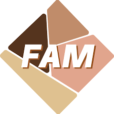
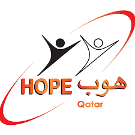
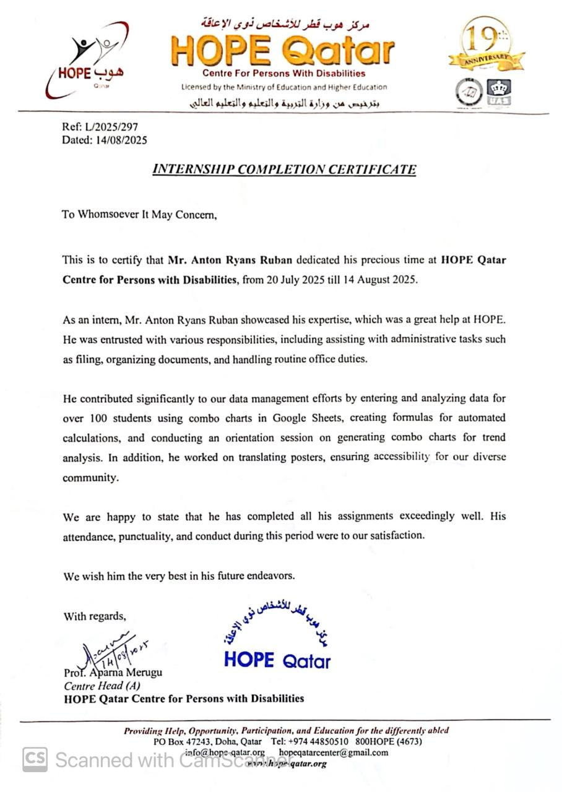
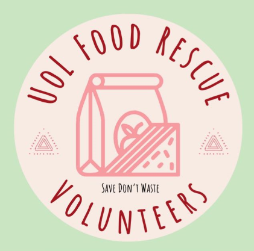
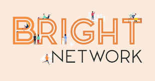
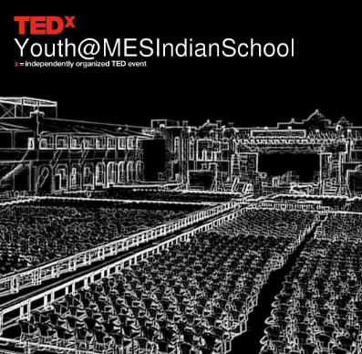

Marketing Team Member – FAM Students

Managing website updates and digital presence, producing marketing content, and running social media platforms to drive engagement and event visibility.

Managing website updates and digital presence, producing marketing content, and running social media platforms to drive engagement and event visibility.

Analysed performance data for 100+ students and built visualisations to track academic progress and support decision-making.

Led large-scale events, including an IBM hackathon (100+ participants), and organised trips, collaborations, and society-wide initiatives.
Founded a creative society, produced promotional content reaching 400K+ viewers, and organised screenings and collaborations.

Helped redistribute surplus food to students, supporting sustainability and community welfare.
Supported teaching and IT sessions, assisted students, and documented activities through photography.


Built a mobile app strategy and analysed user data to inform product decisions.


Led social media campaigns, created content, and analysed audience engagement for a 400+ student event.